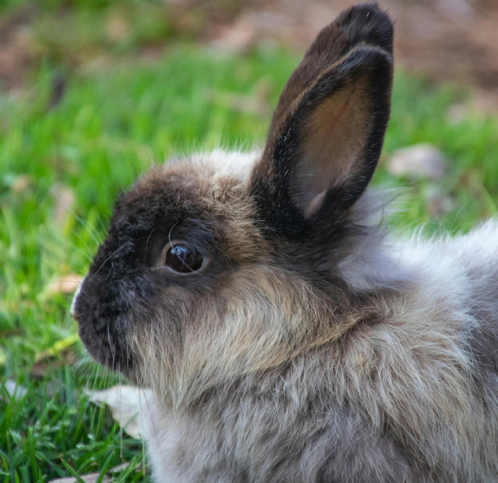
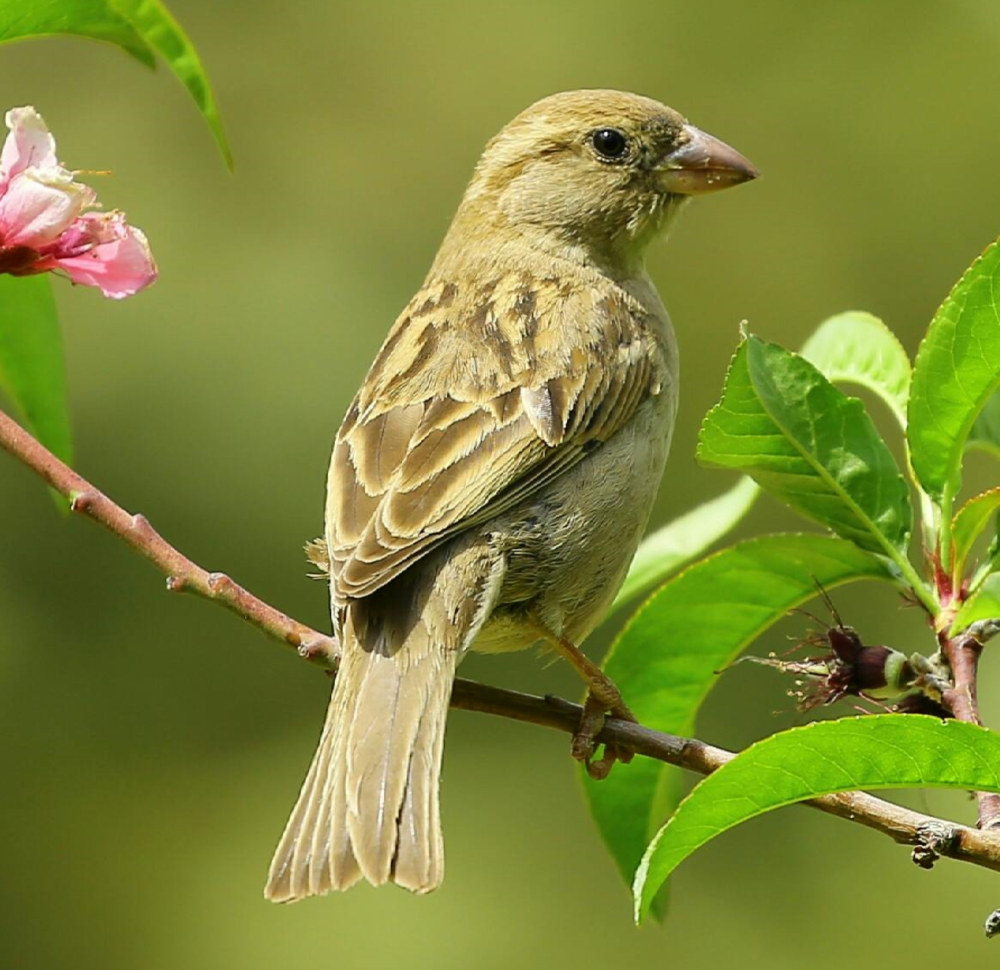

Kani
Kani on yleinen lemmikkieläin, joka vaatii paljon tilaa. Kani tarvitsee toisen kanin seuralaisekseen.

Marsu
Marsu on jyrsijä, ja yleinen lemmikkieläin.

Käärme
Käärme on matelija, eikä sillä ole jalkoja. Se luo uuden nahan kasvaessaan.

Lintu
Lintu on muniva, selkärankainen eläin, jolla on siivet. Lintulajeja tunnetaan melkein 11 000.